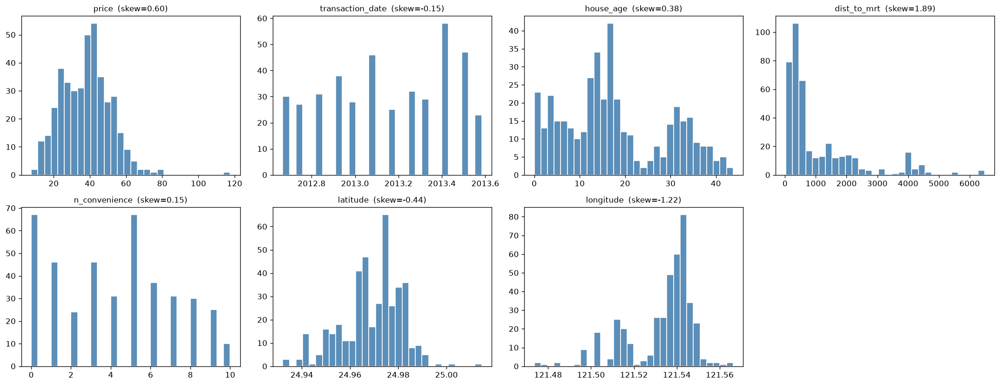
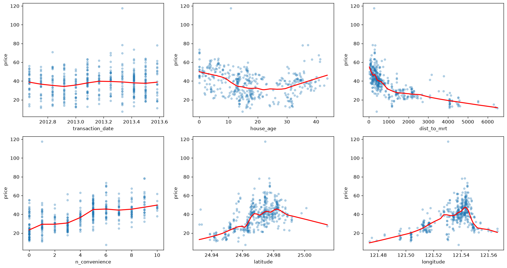
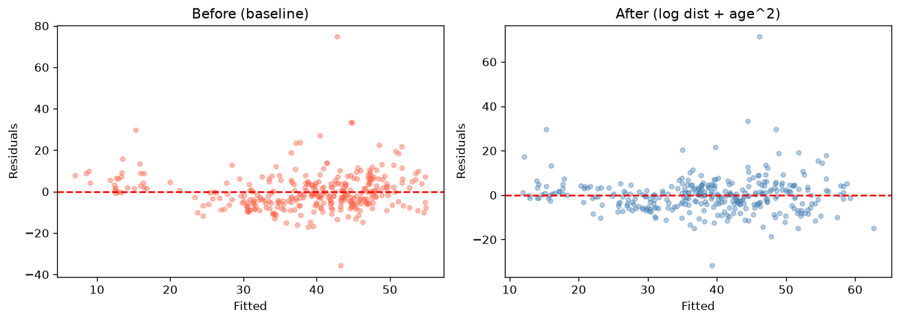

2026-07-28 | 4기 광주 4반 박영서 | 데이터: UCI Real Estate Valuation (n=414, 대만 신뎬구) · 종속변수 price(평균 37.98, 단위 면적당 가격) · OLS(statsmodels), train/test 8:2(seed=42) | 판단 근거(어떤 그래프·수치에서 찾았는지) 중심 정리
Task 1. Baseline 회귀분석 결과 해석
1-1. 분포와 왜도 — 이상치·비선형 예고

▲ 변수별 히스토그램(제목=skew). price·dist_to_mrt 오른쪽 꼬리
근거→판단 ① price skew +0.60 오른쪽 꼬리(고가 매물) → 잔차 정규성 위배 예상. ② dist_to_mrt skew +1.89 최대 → 로그변환 1순위 후보. ③ longitude skew −1.22이나 산점도상 대체로 증가 → 변환보다 공선성 문제.
1-2. 변수–price 관계 — 선형성 점검

▲ 변수 vs price 산점도+LOESS(빨강). 곡선이 직선 아니면 선형가정 의심
근거→판단 LOESS 모양에서: dist_to_mrt=급락 후 완만(감쇠형)→로그, house_age=U자(20년 최저)→제곱항. 나머지는 대체로 직선. 상관(강도): dist −0.67·n_conv +0.57·lat +0.55·lon +0.52·age −0.21. 강도는 상관, 모양은 LOESS로 분리 판단.
1-3. 회귀계수 해석
변수
계수
p
유의
상관
해석
transaction_date
+5.44
0.003
O
+0.09
거래시점 늦을수록 소폭↑
house_age
−0.27
<.001
O
−0.21
연식↑ 가격↓ (U자형이라 선형계수는 근사)
dist_to_mrt
−0.0048
<.001
O
−0.67
MRT 멀수록↓ (가장 강한 음의 관계)
n_convenience
+1.09
<.001
O
+0.57
편의점 1개↑ → 1.09↑
latitude
+229.0
<.001
O
+0.55
북쪽(도심)일수록↑
longitude
−29.5
0.599
X
+0.52
단순상관 큰데 모델선 비유의 → Task 3
적합도 R²=0.558·Adj R²=0.550(분산 56% 설명). Train RMSE 9.12 > Test 7.31 역전은 과적합 아니라 고가 이상치(price 117.5)가 우연히 train에 포함된 탓(근거: 1-1 오른쪽 꼬리).
근거→판단house_age·dist_to_mrt의 잔차에 곡선/치우침 잔여(타 변수는 평평) = 두 변수 비선형이 baseline에 아직 안 잡힘 → Task 2 변환 대상 최종 확정.
Task 1 결론 — 분포·산점도·잔차 세 근거가 ① dist_to_mrt·house_age 비선형 ② 이상치로 인한 정규성 위배 ③ 위치변수 공선성을 일관되게 가리킴 → Task 2·3의 출발점.
Task 2. 모델 개선 — 비선형 변수의 선형화
2-1. 판단 근거를 어디서 찾았나 (3중 교차)
예시는 log_features=['house_age']였으나, 세 근거가 일관되게 다른 답을 가리켰다.
변수
① 산점도 모양(1-2)
② 잔차 잔여(1-5)
③ skew
③ quad_gain
③ log_gain
→ 처방
house_age
U자(비단조)
U자 잔여
0.38
0.157(최대)
0.066
제곱항(로그✕)
dist_to_mrt
감쇠형
치우침 잔여
1.89(최대)
0.073
0.044
로그변환
n_convenience
거의 직선
평평
0.15
0.004
−0.019
변환 불필요
핵심 판단 — skew만 보면 안 된다. house_age는 skew(0.38) 작아도 quad_gain 0.157 최대·U자 → 제곱항이 맞다. 예시의 house_age 로그변환도 개선은 되지만(Adj R² 0.550→0.579), 로그는 단조변환이라 U자 곡률을 다 담지 못해 제곱항(0.586)이 더 낫다. dist_to_mrt는 skew 1.89·감쇠형 → 로그. 같은 비선형도 U자냐 감쇠냐로 처방이 갈린다.
2-2. 개선 후보 비교 — 근거대로 적용·검증
모델
처리
Adj R²
Test RMSE
BP p
메모
Baseline
변환 없음
0.550
7.31
0.209
기준선
A
log1p(dist_to_mrt)만
0.627
6.78
0.131
감쇠형 로그화 효과 큼
B
house_age²만
0.586
6.90
0.315
U자 곡률 반영
C
log(dist)+house_age²
0.645
6.55
0.221
두 처방 결합=최고
검증: 모델 C에서 house_age 1차(−0.879)·2차(+0.0161)이 모두 p<.001로 유의 → 그래프로만 봤던 U자형이 통계로도 확인. Adj R² 0.550→0.645, Test RMSE 7.31→6.55로 설명력·예측오차가 함께 개선됐다.

▲ 잔차 vs 적합값(개선 전 → 후). 후(우)에 큰 양(+) 잔차가 줄고 밴드가 균일해짐 = 1-5의 잔여 곡선 패턴 해소
Task 2 결론 — 변환 대상·방식을 감이 아니라 세 근거(산점도·잔차·수치지표)의 일치로 정했고, 적용 후 성능·잔차·계수 유의성으로 재검증했다.
Task 3. 유의하지 않은 변수 제거 — 유의성 vs 효과크기
3-1. p가 가장 큰 longitude(C에서 p=0.892, baseline 0.599로 일관 비유의) 제거. ※ 변수 수 7 = 원래 feature 6개 + 파생변수 house_age² 1개. longitude 제거 시 6개.
변수 수
Adj R²
Test RMSE
조건수(공선성)
모델 C (전체)
7 (feature 6 + house_age²)
0.645
6.55
2.62e7
C − longitude
6
0.646
6.53
1.55e7
근거: 제거 후에도 Adj R²·Test RMSE가 손실 없이 미세 개선 + 조건수 2.62e7→1.55e7로 1-4의 다중공선성이 실제 완화 → 제거 타당.
3-2. 유의성 vs 효과크기 — 판단 근거는 수치의 모순: longitude는 price와 단순상관 +0.52(효과 있어 보임)인데 모델 p=0.6~0.9(효과 없음). '위치' 정보가 위도·MRT거리와 겹쳐 고유 기여(부분효과)가 0에 가깝기 때문. 유의성=다른 변수 통제 시 0과 구분 여부, 효과크기=실질 기여 크기. longitude는 단독 효과는 있으나 모델 내 고유 효과크기가 작아 제거가 옳다.
추가 관찰 — 모델 C에서 n_convenience도 비유의(p=0.140)화됨(로그변환된 MRT거리가 '생활 편의' 정보 흡수). 다만 상관(+0.57)·해석이 좋아 p값만으로 기계적 제거하지 않고 효과크기·도메인 의미로 유지 판단도 가능.
종합 및 느낀점
단계
판단의 핵심 근거
Adj R²
Test RMSE
Baseline
분포·산점도·잔차로 문제 진단(비선형·이상치·공선성)
0.550
7.31
Task 2
3근거 일치 → dist 로그 + house_age 제곱
0.645
6.55
Task 3
상관 vs p값·조건수 모순 해석 → longitude 제거
0.646
6.53
느낀점 — 하나의 지표가 아니라 여러 근거의 일치로 판단했다. skew 커도 U자면 제곱항(산점도·잔차·quad_gain 일치), 상관 높아도 모델선 비유의(상관 vs p값 모순). "왜 그렇게 판단했는가"를 그래프·수치로 되짚는 과정이 정답 값을 얻는 것보다 중요했다.